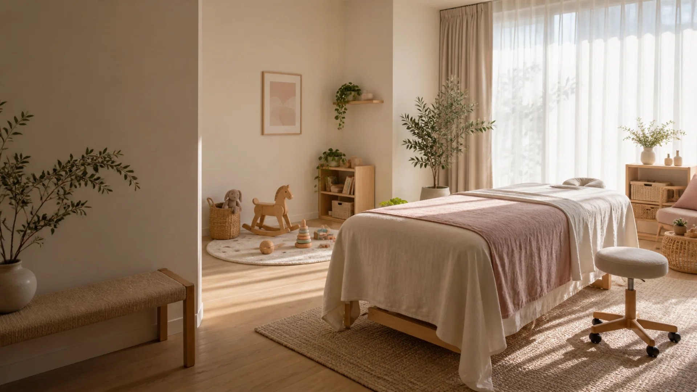

子連れ相談託児の条件や持ち物を事前確認
女性向けケア対象メニューを分かりやすく案内
LINE予約スマートフォンから気軽に相談
CARE MENU
今の状態から選べる入口
「自分はどのメニューを選べばよいか」を予約前に判断しやすい構成です。
01 / Postpartum
産後骨盤ケア
産後の身体の変化や日常生活の悩みを、まず相談したい方へ。
02 / Maternity
マタニティ整体
妊娠中の方が相談条件や施術の流れを確認できる入口です。
03 / With children
子連れ来院
託児の条件、予約方法、必要な持ち物を来院前に確認できます。

A GENTLE VISIT
予約前に知りたいことを、ひとつずつ。
写真と短い説明で空間の雰囲気を伝え、初めての来院でも準備しやすくします。
- 子連れ対応の条件と持ち物を明記
- 対象者と施術の流れを事前に確認
- スマートフォンで読みやすい予約導線
FLOW
施術までの流れ
1
予約
LINEまたは電話。
2
来院
子連れ情報も確認。
3
相談
悩みをヒアリング。
4
案内
今後の通い方を確認。